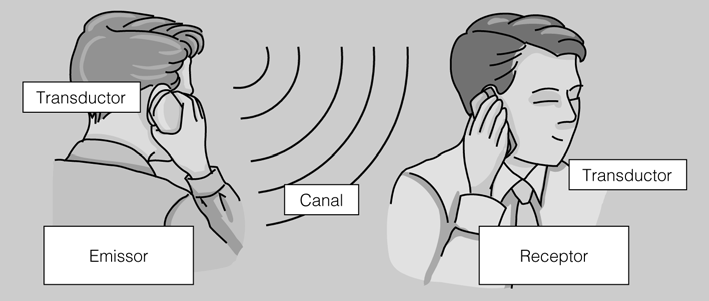

Se denomina canal de comunicaciones el recorrido físico que hay que establecer usando uno o varios medios de comunicación (cobre, fibra, etc.) para que una señal eléctrica, óptico o electroóptico se pueda desplazar entre dos puntos (véase la figura.1).
Los elementos que forman parte de una transmisión son:
- Un emisor, donde se origina la comunicación.
- Un receptor, donde se recibe la comunicación.
- Un canal de comunicación, por donde circula la señal.
Definimos la transmisión de datos como la transferencia de información codificada desde un punto a otro u otros mediante señales eléctricas, electroópticos o electromagnéticos.La transmisión es un proceso que transporta señales de un lugar a otro. Las señales pueden ser luminosos, eléctricos, magnéticos, acústicos, etc. Los parámetros de transmisión son magnitudes físicas: tensión, intensidad de corriente, presión, frecuencia, amplitud, etc.
Para obtener una comunicación, necesitamos una transmisión de señales.
Protocolos
Un proceso de comunicación de datos lo pueden establecer dos ordenadores, ejecutando todos los programas de acuerdo con unas reglas convenidas con anterioridad: protocolos.La comunicación es el proceso con el que se transporta información; esta información viaja en una señal que se transmite desde el emisor hasta el receptor. El emisor y el receptor conocen el mismo código, por eso son capaces de interpretar las señales para obtener la información.En cualquier comunicación participan unos elementos básicos que son:
- Emisor / receptor. El emisor se encarga de proporcionar la información, y el receptor es quien la recibe. Hay comunicaciones en que no se puede identificar el emisor y el receptor, ya que durante la comunicación actúan de emisor y receptor indistintamente. Por ejemplo, en una transmisión telefónica.
ETD En el mundo de las comunicaciones utilizamos el término ETD (equipo terminal de datos), que se refiere al elemento de red capaz de actuar como emisor y como receptor de una comunicación.- En toda comunicación hay al menos un emisor y un receptor, pero podemos tener casos con las características siguientes:
- Varios emisores y un receptor: por ejemplo, una agencia de noticias tiene varios emisores y un solo receptor.
- Un emisor y varios receptores: por ejemplo, la televisión tiene un emisor y varios receptores.
- Varios emisores y varios receptores: por ejemplo, una red de ordenadores
- Transductores. Un transductor es un elemento capaz de transformar la naturaleza de la señal. La señal físico que más se utiliza en las telecomunicaciones es la señal eléctrica, porque es fácil y rápido de transportar y transformar, pero cada vez gana más peso la señal óptica. Son ejemplos de transductores un micrófono, un altavoz, un teléfono o un fax.
-
Canal. El canal es el elemento por donde se transporta la señal desde el emisor hasta el receptor. Cada señal tiene su tipo de canal: las señales ópticas, la fibra; las señales eléctricas, el cobre; y las señales inalámbricas, el aire.
Un canal se define desde el punto de vista de las telecomunicaciones por sus propiedades físicas:
-
Naturaleza de la señal que se ha de transportar.
-
Velocidad de transmisión.
-
Capacidad de la transmisión (ancho de banda).
-
Nivel de ruido que genera.
-
Longitud.
-
Modo de enlace entre el emisor y el receptor.
RTC Red de telefonía conmutada es la red de transmisión de voz clásica, que utiliza cable paralelo o de par trenzado no apantallado. También transmite datos a baja velocidad utilizando la modulación. -
-
Moduladores y codificadores. Para transmitir, no sólo hay que la señal y el medio sean los apropiados, ya que a veces la señal no es el adecuado para lograr eficacia en la transmisión.
Si queremos transmitir información entre dos ordenadores a través de una línea RTC, necesitaremos un módem.
El ordenador emite señales eléctricas -capaces de circular por el hilo de cobre-, pero estas señales son digitales y la línea RTC es de transmisión analógica: hay, pues, transformar la señal digital en analógica. Un módem -modulador / desmodulador- convierte la señal digital en analógica y cuando llega al receptor, transforma la señal analógica en digital.
Ejemplo de comunicación
Cuando hablamos por teléfono, queremos establecer una comunicación y, por tanto, el emisor y el receptor acordarán un código conocido por ambos -catalán. La voz generada por el emisor crea una onda de presión de naturaleza mecánica, señal que se convierte en impulsos eléctricos a través del micrófono. La señal se transporta -transmisinó- a través de los hilos de la compañía telefónica. Una vez llegue al receptor -auricular del teléfono- la señal eléctrica se volverá a convertir en onda de presión, por lo que el receptor comprenderá el mensaje y se habrá establecido una comunicación (véase la figura.2).
El códec -codificador / descodificador- encarga de codificar adecuadamente las señales eléctricas digitales adaptándolos al modo que requiere el canal, siempre digital.